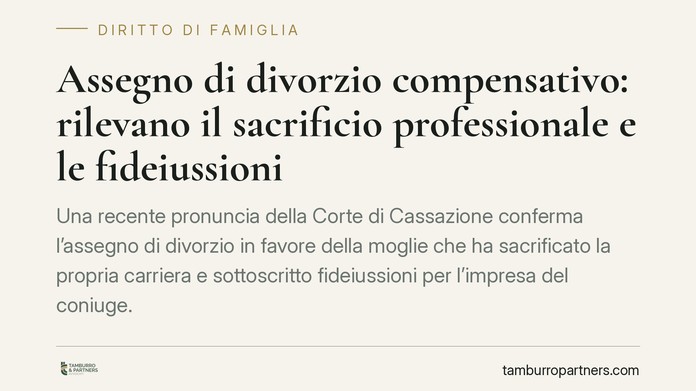

Assegno di divorzio compensativo: rilevano il sacrificio professionale e le fideiussioni
Una recente pronuncia della Corte di Cassazione conferma l'assegno di divorzio in favore della moglie che ha sacrificato la propria carriera e sottoscritto fideiussioni per l'impresa del coniuge. La decisione ribadisce la funzione compensativa dell'assegno e chiarisce che la nascita di un figlio da una nuova unione non riduce in automatico il contributo dovuto all'ex partner.

Il caso
Al centro della vicenda una coppia dai ruoli nettamente distinti: lei ha accantonato le proprie prospettive professionali per dedicarsi alla famiglia; lui ha costruito e sviluppato un'attività imprenditoriale. Non solo: l'ex moglie aveva anche sottoscritto fideiussioni, cioè garanzie personali, a sostegno dell'impresa del marito, esponendo il proprio patrimonio al rischio d'impresa.
Il giudice di merito aveva riconosciuto in suo favore un assegno divorzile di importo elevato. La Cassazione ha confermato quella decisione, respingendo i tentativi dell'ex marito di ottenere una riduzione, anche alla luce della nascita di un figlio da una sua nuova relazione.
Inquadramento normativo
Il riferimento è l'art. 5, comma 6, della Legge n. 898/1970 (legge sul divorzio). La norma prevede che il tribunale disponga l'assegno tenendo conto di una serie di parametri: le condizioni dei coniugi, le ragioni della decisione, il contributo personale ed economico dato da ciascuno alla conduzione familiare e alla formazione del patrimonio comune e di quello dell'altro, nonché la durata del matrimonio.
La svolta interpretativa risale alle Sezioni Unite della Cassazione, sentenza n. 18287/2018. Con quella pronuncia è stata superata la logica del solo "tenore di vita goduto in costanza di matrimonio" ed è stata affermata la natura composita dell'assegno: non più solo assistenziale (sostegno a chi non dispone di mezzi adeguati), ma anche perequativo-compensativa. In altre parole, l'assegno serve a riequilibrare le disparità economiche che derivano dalle scelte condivise durante il matrimonio, compensando chi ha rinunciato a opportunità lavorative e reddituali per la famiglia.
Perché la funzione compensativa pesa
Il punto è decisivo. Quando un coniuge rinuncia alla propria carriera per sostenere l'altro e la famiglia, quella scelta produce effetti duraturi: minori contributi previdenziali, minore esperienza professionale accumulata, difficoltà di reinserimento nel mercato del lavoro. L'assegno interviene proprio a riconoscere questo sacrificio.
Nel caso esaminato, la posizione dell'ex moglie risultava rafforzata da un elemento ulteriore: le fideiussioni firmate a favore dell'impresa del marito. Un atto che non è semplice sostegno affettivo, ma assunzione di un rischio economico concreto a beneficio del patrimonio dell'altro coniuge. Questo contributo diretto alla formazione e alla tenuta dell'attività imprenditoriale rientra pienamente tra i fattori che il giudice deve valutare.
La nascita di un figlio da nuova unione
L'ex marito aveva chiesto la riduzione dell'assegno anche in ragione della nascita di un figlio da una nuova relazione. La Cassazione ha chiarito che questa circostanza non comporta una riduzione automatica.
I nuovi oneri familiari possono incidere sulla situazione economica complessiva, ma vanno dimostrati e valutati in concreto. Non basta allegare la nascita del figlio: occorre provare un effettivo e rilevante mutamento delle condizioni patrimoniali che giustifichi la revisione. La funzione compensativa già maturata nel precedente matrimonio non si cancella per il solo sopraggiungere di nuovi carichi.
Implicazioni pratiche
Per chi affronta un divorzio, la decisione conferma un'indicazione chiara: le scelte compiute durante il matrimonio contano, e vanno documentate. Il coniuge economicamente più debole non deve limitarsi a invocare il tenore di vita passato, ma deve ricostruire e provare il proprio contributo. Allo stesso tempo, chi chiede la riduzione dell'assegno non può fare leva su circostanze generiche: serve prova di un mutamento effettivo delle condizioni economiche.
Cosa fare in concreto
- Ricostruite il contributo dato alla famiglia: raccogliete prova delle rinunce professionali (dimissioni, rifiuto di offerte, interruzioni di carriera) e del loro impatto economico.
- Conservate la documentazione delle garanzie prestate: fideiussioni, garanzie reali, versamenti a favore dell'attività dell'altro coniuge.
- Quantificate il divario economico attuale: redditi, patrimoni, posizione previdenziale di entrambi, per rendere misurabile lo squilibrio.
- Se chiedete una revisione, provate il cambiamento: documentate in modo puntuale i nuovi oneri e l'effettiva variazione delle condizioni patrimoniali.
- Pianificate la strategia probatoria per tempo: consigliamo di organizzare la documentazione prima dell'avvio del procedimento, non a ridosso delle udienze.
Contributo informativo a cura di Tamburro & Partners Avvocati - Avv. Giuseppe Tamburro. Non costituisce parere legale.
Ogni famiglia ha il suo equilibrio.
Separazione, divorzio, affidamento, assegno: se vuoi un confronto riservato su una specifica situazione, scrivi allo studio. Ti rispondiamo entro un giorno lavorativo.